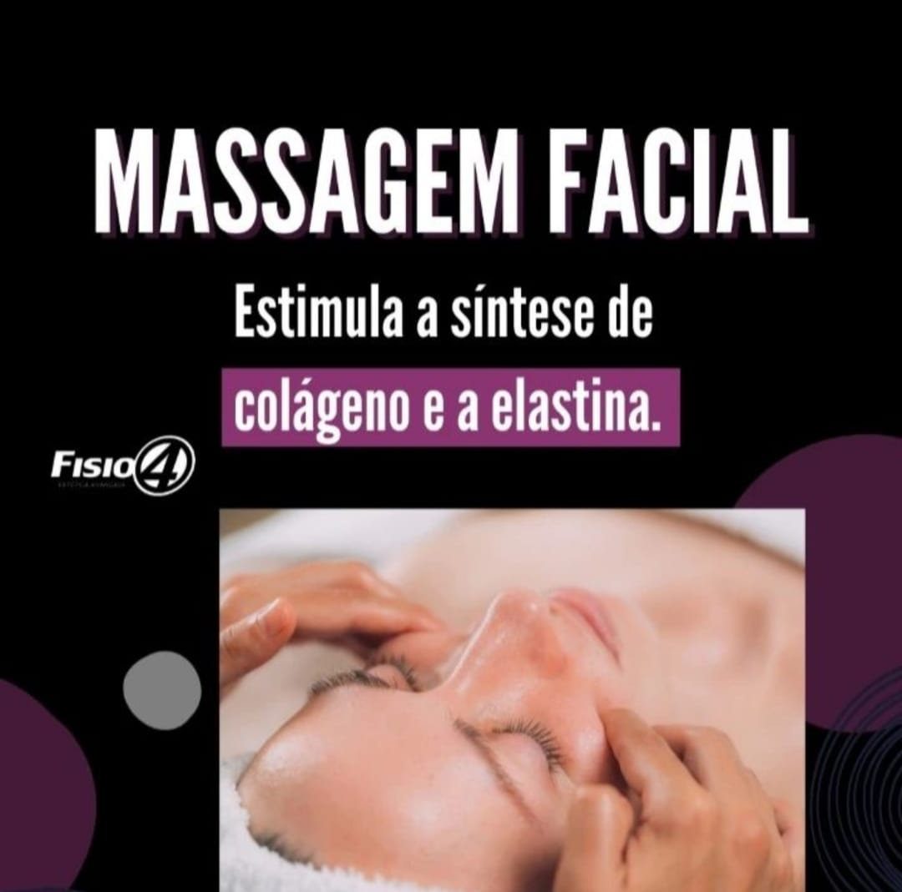
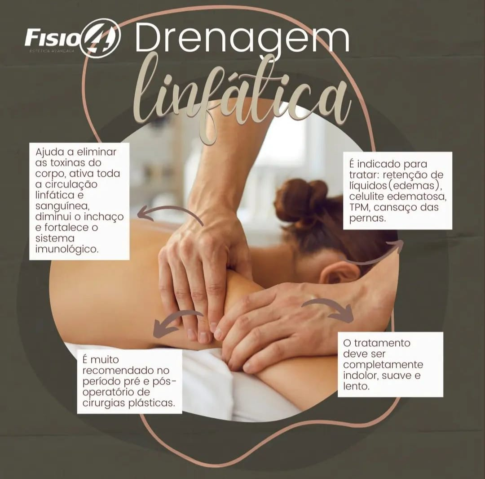
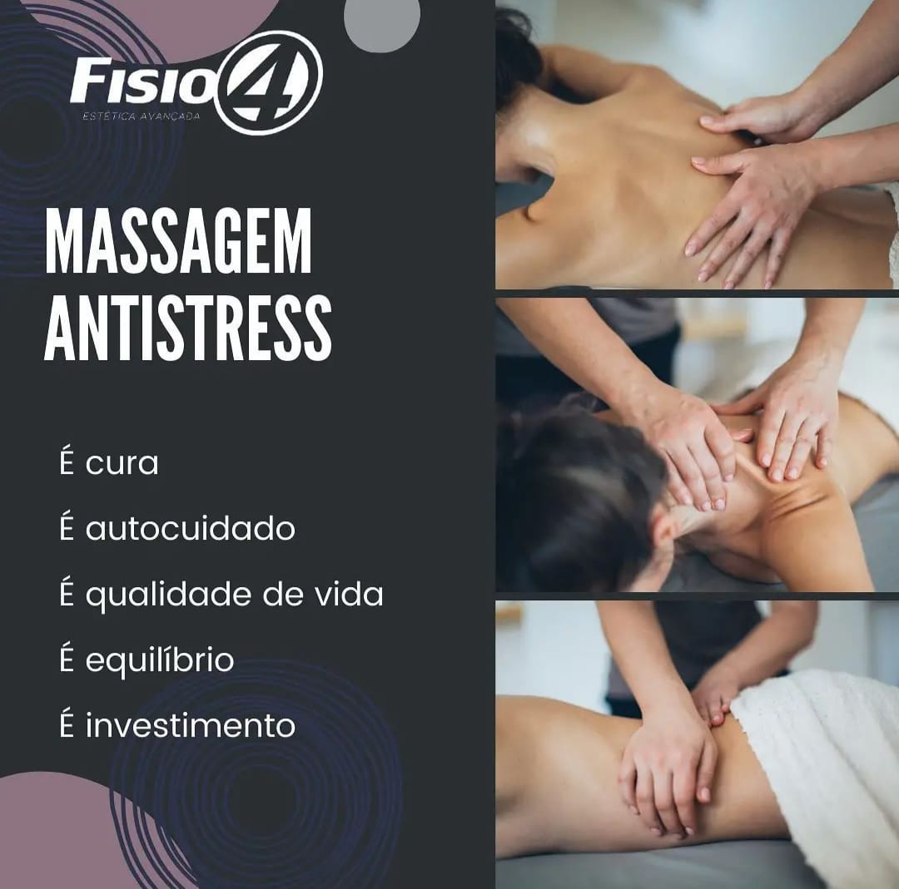
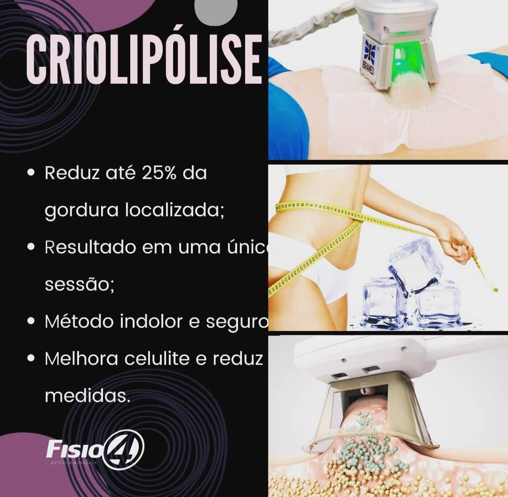
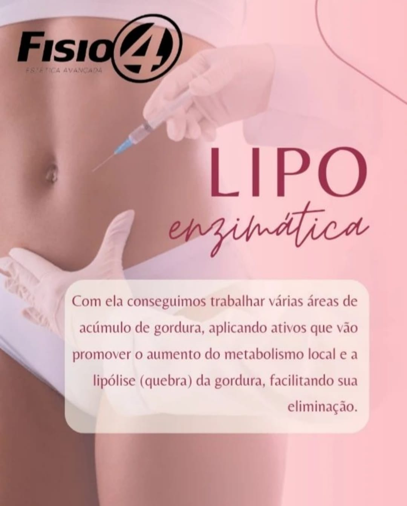

Nossos Procedimentos
Massagem Facial

A massagem facial é uma alternativa perfeita para quem deseja relaxar
e aproveitar diversos benefícios estéticos e para a saúde da pele.
Se você gosta de cuidar do rosto e tem curiosidade sobre os
melhores tratamentos para essa região, com certeza vai querer levar
esse para a vida!
(Valor: 100,00)
Drenagem Linfática

A drenagem linfática tem como objetivo aumentar o volume
e a velocidade da linfa a ser transportada pelos vasos
e ductos linfáticos. Aumenta a absorção de nutrientes por meio
do trato digestório, aumenta a quantidade de líquidos a ser
eliminada e melhora as condições de absorção intestinal, dentre outras funções.
(Valor: 120,00)
Massagem Antistress

Também conhecida como relaxante, é uma técnica com movimentos suaves
de deslizamento e amassamento, realizada com óleo de semente de
girassol e óleo essencial de lavanda. Essa combinação auxilia
no combate ao stress, insônia, cansaço, fadiga mental e física.
(Valor: 110,00)
Criolipólise

É um método não invasivo, realizado em clínicas de estética
por um profissional capacitado, que age na redução da
gordura corporal através do congelamento controlado a vácuo.
(Valor: 120,00)
Lipo Enzimática

É realizada com a aplicação de enzimas lipolíticas na área de
tratamento, fazendo uso de agulhas finas em pontos específicos.
Essas enzimas são proteínas que aceleram reações químicas e
destroem as células adiposas. Ou seja, melhoram a
circulação sanguínea e queimam a gordura.
(Valor: 180,00)
Localização
Estamos localizados na cidade de Patos-PB, próximo ao Terreiro do Forró, no prédio Milindra Nº001.